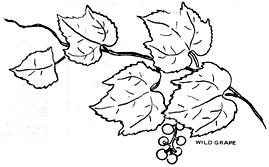
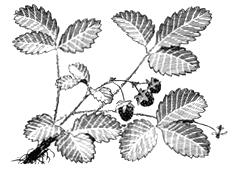
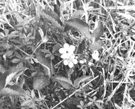
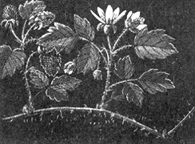
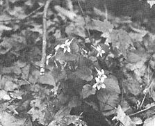
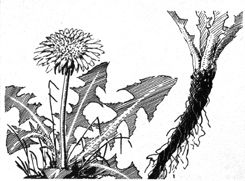
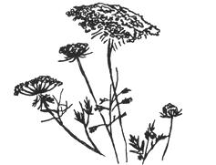
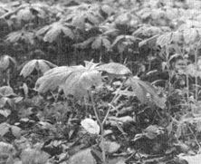
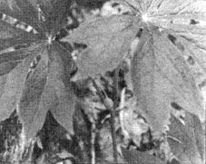
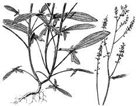

PHOTOS BY AUTHOR. LINE DRAWINGS,
EXCEPT FOR WILD GRAPE AND QUEEN ANNE'S-LACE,
COURTESY OF BRITISH COLUMBIA PROVINCIAL MUSEUM.
I learned at an early age that our home in the country was surrounded by groceries "free for the picking". Wild strawberries, raspberries, blackberries, dewberries, elderberries and wild grapes contributed to my summer fare. The aroma of fresh berry pie and canned wild fruits remains quite vivid in my memory of those days. I especially recall the nearby field of wild asparagus so abundant that most of the spears grew into seed stalks before they could be cut.
Still, although I've stalked the wild asparagus since age four, I've just begun to really appreciate the value of foraged food. Over the years, except for an occasional trip into the country to hunt walnuts, I'd almost forgotten about the wild foods of my childhood. A recent job transfer, however, enabled me to purchase a home near an abandoned vineyard overgrown with several varities of wild berries. Furthermore, our new house is within a few miles of THE Mother Earth News. This fortunate coincidence has opened a new experience of foraging wild foods for my entire family.
Most folks view wild vegetation with contempt and as an enemy of the lawn and garden. That which is not a planned part of the suburban development is viewed as being worthless; as an eyesore which detracts from a well-manicured environment. A wide variety of dangerous chemicals has been developed to eliminate such "worthless weeds". Unfortunately, I've seen many a fine wild strawberry patch succumb to chemicals and the lawn mower. Countless vacant lots, once lushly overgrown with a live supply of wild foods, have been transformed into wastelands of barren stubble.
I'd like to suggest with this article that our so-called "weeds" may serve some fundamental purpose - not only to a balanced ecology - but also to human nutrition. Additionally, although the experience of foraging for wild food may not be a panacea for our times, it may yield some positive alternatives to our present system of control.
WILD STRAWBERRIES
Few people will dispute the fact that wild strawberries are superior to cultivated varieties. They're a valued prize for the wild food forager. I've located a number of fine patches of this luscious fruit within a few hundred yards of my suburban home. One patch is nearly an acre in size and its berries are exceptionally good.
Although the wild strawberry is small and filling a pail with clean berries is a painstaking task, my family and I usually have been able to pick enough for several dessert treats in a half hour. Our children enjoy harvesting wild fruit and always look forward to an excursion to the strawberry patch. Sometimes our two-year-old Betsy picks more than six-year-old John. Betsy, however, is usually unwilling to share her treasure and prefers to have it served with milk as soon as she returns home.
Not many folks realize that wild strawberry leaves are one of the richest natural sources of vitamin C. The leaves can be eaten raw, in a salad, or as a garnish for camp stew. Since their taste and texture may not be totally pleasing to everyone's palate, a mild-tasting extract can be made by placing the leaves in a blender with a little water. This mixture can then be used to dilute frozen juice concentrates. It can also be boiled and served with a little honey as a nutritious tea.
BLACKBERRIES
The blackberry and related dewberry grow in abundance throughout nearly all the United States. Blackberries are probably the most valued and used wild fruit in the country. A hedge of them, mixed with wild grape vines, grows at the rear of our lot. More blackberries surround the nearby strawberry patches, grow wild in the vineyard, along fence rows and in the edge of the closest woods. When the strawberry crop is gone, our children eagerly await blackberry picking time.
In the past two summers, we've made use of this wild crop in pies, cobblers, jams, jellies, juices and wines. We've added blackberries to other foods and canned them. For some reason, we've never tired of this abundant crop and we never seem to have enough of the highly nutritious fruit.
Blackberries contain a good amount of protein, calcium, phosphorus, iron and vitamins A and C. Their overall nutritional value is higher than orchard fruits.
As a child, I looked forward to blackberry picking each summer. In the late afternoon of a picking day, I carried my harvest to the nearby highway and set up a little stand. Within an hour, all my berries would be sold. Sometimes sales were so fast that I had to disappoint my regular customers.
VIOLETS
On our first family forage for wild foods, we were introduced to eating blue violets. At first, the thought of eating flowers seemed rather strange, but after a few tries it became quite natural.
Both the flowers and the leaves of the common blue violet are edible. A half-cup of violet greens provides more than the daily adult requirement of vitamins A and C. Although the taste of the greens is rather bland, they're not at all bad and the experience of eating wild violets was an enjoyable one for our two children. My wife and I, however, experienced some momentary anxiety when we thought that Betsy had eaten some of the poison ivy growing alongside a cluster of violets (although we know some people who claim that eating poison ivy produces an immunity - and I've seen it done - we do not recommend this practice). Fortunately, our little daughter had learned to identify the wild foods we've eaten and, apparently, has not experimented on her own.
Our new interest in blue violets encouraged us to attempt transplanting some from the nearby woods to our flower garden. The operation was successful and we should have an abundant crop next year. One of the best things about the violet, by the way, is that it's not harmed by picking the blossoms. The more you pick, the more the plant produces.
For those who enjoy experimenting with alternative methods of preparing wild foods, the violet - in addition to the standard wild salad - can be used to make jam, jelly, syrup and confections. When one considers the numerous alleged conditions cured by violet syrup (according to the old time herbalists), who knows what may be discovered!
DANDELION
The dandelion is a favorite of many people throughout the world and is one of the easiest plants to identify: Just ask anyone with a lawn.
I prefer to pick dandelions as soon as they begin to grow, when the leaves are young and tender. Others wait until the plants are more substantial but still pick the leaves before blossoms develop. The mature dandelion leaves have a strong, characteristically bitter taste that can be reduced by boiling the plant in lightly salted water for about five minutes.
The dandelion bud has been found to contain a fair amount of vitamins A and C and a rather high quantity of protein. Dandelions should be considered an essential part of any survival diet because of the plant's nutritional value, its abundance and variety of uses. Even the roots - diced and roasted for about four hours - make a good coffee substitute.
Dandelion blossoms, of course, are famous for their use in making wine.
I prefer to pick dandelions as soon as they begin to grow, when the leaves are young and tender. Others wait until the plants are more substantial but still pick the leaves before blossoms develop.
The mature dandelion leaves have a strong, characteristically bitter taste that can be reduced by boiling the plant in lightly salted water for about five minutes. After the plant blooms it is usually considered too bitter to eat. I think the younger leaves are a fine addition to a salad; the more mature greens can be eaten cooked like spinach and seasoned with butter.
The developing yellow blossoms, which form as crowns, provide another vegetable for the table. Cover them with boiling water and cook for about three minutes. Drain and season with salt and butter. The crowns are edible until they mature into blossoms, although - as they approach this change - they must be cooked longer and the water changed once before eating.
Euell Gibbons reminds us that the botanical name for the dandelion, Taraxacum officinale , suggests that it is the "official remedy for disorders". An ancient name for dandelion was "scurvey plant", derived from its use in curing or preventing that disease.
The dandelion bud has been found to contain a fair amount of vitamins A and C and a rather high quantity of protein. Dandelions should be considered an essential part of any survival diet because of the plant's nutritional value, its abundance and variety of uses. Even the roots - diced and roasted for about four hours - make a good coffee subsitute. Dandelion blossoms, of course, are famous for their use in making wine.
WILD CARROT
While clearing some "unwanted weeds" from my garden this spring, I discovered that most of the plants were wild carrot (Queen Anne's-lace). Many had sizeable roots and, within a short time, I gathered a full pail. The plant is easily identified by its delicate feathery leaves, tall slender stalks topped by white flowering umbels - some of which are flattened like saucers - and a characteristic carrot odor. The edible roots are white, rather than yellow-orange.
Wild carrots should be washed, scraped and boiled for about twenty minutes. Before serving, season with butter and salt. The tough pulpy cores can be removed quite easily before eating. Wild carrots can also be used to flavor camp stew or soup.
It is said that the best part of the plant is the seeds. They can be used to make tea (mixed with a little spearmint or peppermint), as a spice for cooking and as an herbal medicine (for flatulence, coughs and hiccups).
PLANTAIN
The lowly lawn and garden pest known as plantain ranks near the top of the list of nutritional greens. Plantain is said to outrank garden greens in nutrients because it grows more slowly and, thus, has more time to store vitamins and minerals. The early pioneers used plantain extensively in their diets and the plant is still an important food in certain sections of the U.S.
Plantain is available almost everywhere and its appearance is readily discernible: Ribbed, long, broad oval leaves and slender seed stalks growing out of the center of the leaf cluster.
Its bland taste makes plantain a palatable addition to any salad. I much prefer it to dandelion greens. It isn't as tender as head lettuce but plantain can be chopped and made tender enough to suit any taste. As a general rule the young, smaller, rather shiny broad-oval leaves are best. These small plantain leaves are available all summer because new leaves continue to form throughout the season.
CLOVER
The reddish-purple blossom heads of the ordinary wild clover are rated high on the list of survival foods. They are a tasty addition to any salad and they can be eaten alone. The heads can be gathered throughout June and July and dried indoors at room temperature for later use as tea. A small amount of dried spearmint and peppermint leaves added to the clover is said to make a healthful brew. The blossoms should be gathered from undisturbed fields rather than from the lawn. The large blossoms from the fields are distinctly tastier than the small yard-variety clover blooms. I find myself nibbling clover blossoms every time I take a hike.
MAY APPLE
After the first few warm days of spring, our closest woods seems to be filled with umbrella-like plants growing in dense clusters. Each of these May apple plants, with a stem that forks into two of the characteristic umbrellas, will develop a waxy-white blossom at the "V" of the stem. The blossom is soon followed by a single, smooth, yellow fruit about the size and shape of an egg. When the May apples are ripe, in late summer, they may be picked and eaten.
The taste of the musky May apple is difficult to describe: It has been likened to the guava and the passion fruit. Those who may not appreciate the flavor can liquify May apples in a blender and add the juice to lemonade or mix it half and half with a table wine. The wild food gourmet should also consider making May apple Marmalade. It's reputed to be the finest product of this fruit.
SORREL
Another tasty green that grows abundantly in our nearby fields is sorrel. The spearhead-shaped leaf, one-half to two inches in length, grows in clumps and sometimes virtually covers the ground in overgrown and unused pastures. Of all the wild greens I've eaten, I prefer sorrel. It's very tender and has a slightly sour taste that some describe as lemony (which suggests using the blender to make sorrelade).
There is an old axiom that "the better the taste, the higher the nutritive value". I've found this true when comparing wild foods and, although I haven't seen an analysis of sorrel, I believe the plant has sufficient value to justify my preference for this salad green.
There are more than enough vitamins and minerals in wild foods to sustain health. Indeed, many uncultivated plants contain more food value than the best garden vegetables and fruits. Freshness is one rather obvious reason why wild foods outscore grocery store produce but, beyond that, analysis has shown many wild plants to be vastly superior to the garden variety.
Unfortunately, our palates have become accustomed to certain foods for reasons other than nutrition. Few people will ever become ecstatic over a strict diet of wild foods but, thanks to my recent relatively short but intense exposure to foraging, I am no longer impressed by shelves of processed garbage in the supermarket. I am sure that we could, with benefit to our health and well-being, forget the grocery store altogether, in preference to that which grows wild in the fields.
I'm amazed at how eagerly our children have responded to our foraging experiments. They have been quite willing to try every new wild food we've selected and they have not rejected any of these unfamiliar taste sensations. They've also come to know our Mother Earth to be a provider of abundant resources which may suggest to them that some of the finest things of life are still free.
Although this article does not exhaust my own experience with wild eats, my knowledge is vastly limited compared to what I have yet to learn. Some of the more experienced foragers could find hundreds of valuable crops in the territory I've walked. A few even suggest that practically every plant can be eaten and contains some food value.
As a general rule, for those who attempt survival living, any plant that tastes good is edible. If you want to experiment, then, don't swallow anything that is particularly bitter. And, when you do swallow, always first try just a tiny bite of the new plant. If you don't experience any nausea or upset within eight to ten hours, chances are that your potential food source is edible.
I would further recommend that the neophyte forager carry the field guide edition of Euell Gibbons' Stalking the Wild Asparagus. It is also well to be accompanied by an experienced guide but almost anyone can easily identify the foods recommended in this article and those suggested by James Churchill in the last issue of THE MOTHER EARTH NEWS.
|
 Wild Strawberry / Fragaria Species |
 Wild Strawberries |
 Blackberries / Rubus species |
|
 Blue Violets |
 Dandelion/ Taraxacum species |
 Queen Anne's - Lace |
|
 May Apple |
 May Apple |
 Sheep Sorrel / Rumex acetosella |
|
 |
|
|